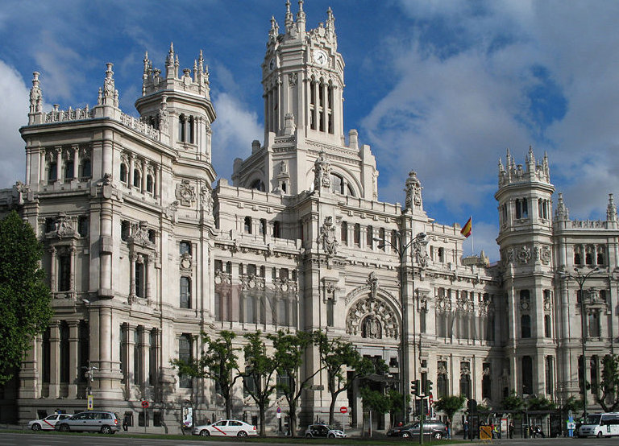

Spain

Spain is a diverse country sharing the Iberian Peninsula with Portugal at the western end of the Mediterranean Sea. It is the country with the third-largest number of UNESCO World Heritage Sites, after Italy and China. Spain is considered an exotic country in Europe due to its friendly inhabitants, relaxed lifestyle, its cuisine, vibrant nightlife, and world-famous folklore and festivities. Among many places worth visiting are Spain's thriving capital Madrid, the vibrant coastal city of Barcelona, the famous "Running of the Bulls" at Pamplona, major Andalusian cities with Islamic architecture, like Seville, Granada and Cordoba, the Way of St. James and the idyllic Balearic and Canary Islands. MadridMadrid is the capital and largest city of Spain, as well as the capital of the autonomous community of the same name (Comunidad de Madrid). The population of the city is roughly 3.3 million with a metro area population of almost 6.5 million. Madrid is best known for its great cultural and artistic heritage, a good example of which is the El Prado museum. Madrid also boasts some of the liveliest nightlife in the world. Madrid is located just northeast of the geographical center of the Iberian Peninsula, in the middle of the Spanish central Castillian plateau (Meseta central), at an average altitude of 650m. Nearly all of the most famous tourist areas are located in the center of the city including Puerta del Sol, Plaza Mayor, Palacio Real, and Plaza de Colon. The major streets in Madrid include the Gran Via, Alcala Street, and Paseo de la Castellana. |
Return to main